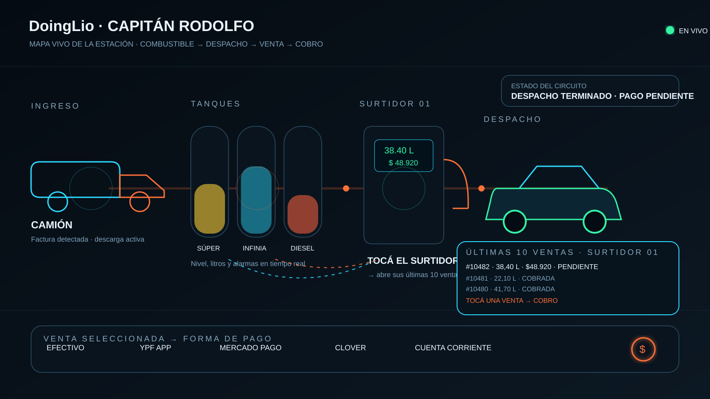

Validando conexión SQL…
El Mapa Vivo solo se abre con una sesión SQL válida.
Volver a Conexión SQL
← SQL
● SQL conectado
v…

Conexión validada. Los valores visuales de esta pantalla todavía son de maqueta; los datos reales se conectarán cuando definas tablas y campos.
Capitán Rodolfo · v…